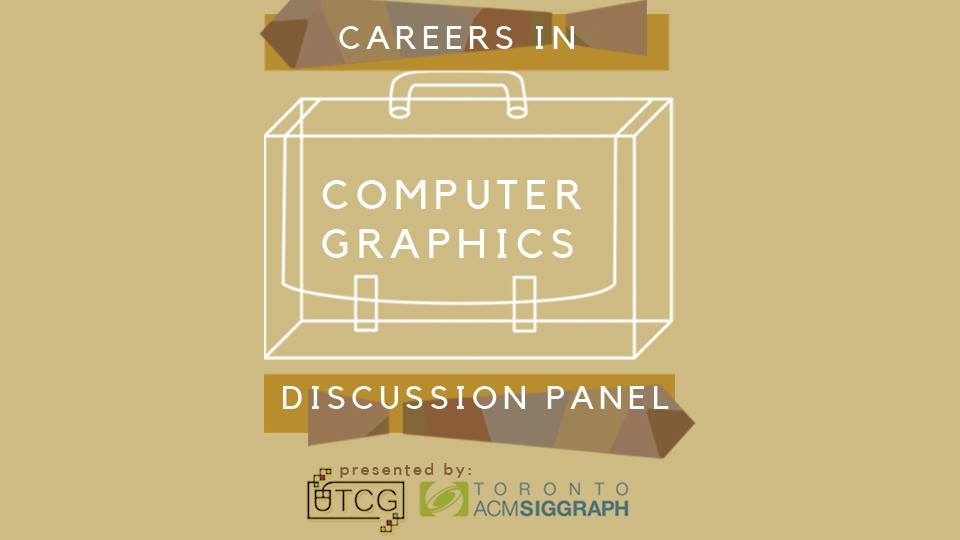
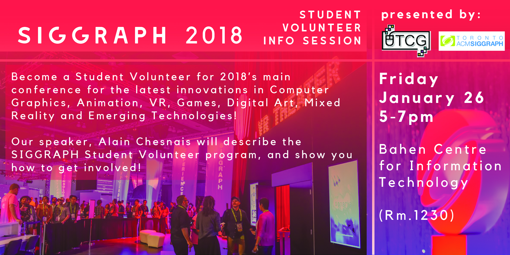

Our Mission
Our mission is to create a supportive learning community that provides
graphics-related workshops, research talks, field trips and social events
for people who are interested in any part of computer graphics!
Events
SIGGRAPH Student Volunteer Info Session
Wednesday anuary 23rd, 2019
6:30pm-8:00pm
Bahen Centre for Information Technology BA1210
Want to get involved with the most important technical Computer Graphics conference in the world? Hoping to find a career or meet people involved with VFX, tooling, animation, gaming and entertainment industries? The SIGGRAPH 2019 Conference will be hosted in Los Angeles this Summer!
Come join us Wednesday January 23rd at BA1210 as Alain Chesnais, former President of ACM and of ACM SIGGRAPH, comes to talk about getting involved at the Conference!
SIGGRAPH is the opportunity to get front row seats to the latest in Computer Graphics and Interactive Techniques. Every year, experts and leading companies (such as Autodesk, SideFX, Disney Animation, Pixar, Ubisoft, Dreamworks, Blue Sky Studios to name a few) from around the world gather to share the newest innovations and compare notes on the latest advances in the field of CG.
Alain will talk to us about the the conference and how you can get involved in the Student Volunteers program. The program has been around since the beginning of the Conference and has given thousands of students the backstage pass into the Conference. Many Student Volunteers have used the Conference as a stepping stone for their career in CG both in artistic and technical roles.
As the February 12 application deadline for the Student Volunteer Program is fast approaching, come find the answers to all of your questions at this talk!
Alain Chesnais is a long time ACM and SIGGRAPH volunteer. He served as ACM President from 2010 to 2012 and ACM SIGGRAPH President from 2002 to 2005. In 2016 he received the ACM SIGGRAPH Outstanding Service Award. In 2003, he and his team received an Oscar for the creation of the Maya.software package. Currently he is the CTO at Receptiviti.
Past Events
Holography: The Art and Science of Holograms
Friday, October 26th, 2018
3:30pm - 5:00pm
Mclennan Physical Laboratories rm. 137
Ever wondered what holograms are like in real life? Professor Emanuel Istrate (who teaches the holography course, IVP210) will be giving a talk on the art and science behind holograms and showing us examples of holograms that were made right here at U of T!
He'll be touching on topics such as 3D perception, the process of making holograms, how we use 3D models in holography and much more!
Careers in Computer Graphics: Panel Discussion
Wednesday, September 26th, 2018
6:00pm - 8:00pm
Bahen Centre for Infromation Technology rm. 2175

Are you curious about what it's like to have a career in computer graphics?
Would you like to learn more about what it's like to work in animation, VFX, media, VR, 3D printing, and more?
The University of Toronto Computer Graphics Club will be hosting a discussion panel featuring guests with experience in computer graphics industry and research!
Our panelists include:
Ian Caven:
Ian and his team received the Scientific and Engineering Academy Award for the Academy of Motion Picture Arts and Sciences in 2012 and he’s currently working on special purpose hardware and software for beekeepers.
Kris Oel
Kris is the VP of the Toronto ACM SIGGRAPH Chapter and Art Director of Astral Media’s specialty channels.
Ryan Schmidt
Ryan holds a PhD in Computer Graphics from the University of Toronto and is currently the head of Gradientspace, a 3D product studio.
SIGGRAPH Student Volunteer Info Session: 2018's Main Computer Graphics Conference
Friday, January 26th, 2018
5:00pm - 7:00pm
Bahen Centre for Infromation Technology rm. 1230
***Please register for this event on Eventbrite. ***

Want to get involved with the most important technical Computer Graphics conference in the world? Hoping to find a career, meet people, and learn about the latest innovations in CG, Animation, VR, Games, Digital Art, Mixed Reality and Emerging Technologies? The SIGGRAPH 2018 Conference is coming to Vancouver this Summer!
Come join us Friday January 26nd at BA1230 as Alain Chesnais, former President of ACM and of ACM SIGGRAPH, comes to talk about getting involved at the Conference!
SIGGRAPH is the opportunity to get front row seats to the latest in Computer Graphics and Interactive Techniques. Every year, experts and leading companies (such as Autodesk, SideFX, Disney Animation, Pixar, Ubisoft, Dreamworks, Blue Sky Studios to name a few) from around the world gather to share the newest innovations and compare notes on the latest advances in the field of CG.
Alain will talk to us about the the conference and how you can get involved in the Student Volunteers program. The program has been around since the beginning of the Conference and has given thousands of students the backstage pass into the Conference. Many Student Volunteers have used the Conference as a stepping stone for their career in CG both in artistic and technical roles.
As the February 13 application deadline for the Student Volunteer Program is fast approaching, come find the answers to all of your questions at this talk!
Alain Chesnais is a long time ACM and SIGGRAPH volunteer. He served as ACM President from 2010 to 2012 and ACM SIGGRAPH President from 2002 to 2005. In 2016 he received the ACM SIGGRAPH Outstanding Service Award. In 2003, he and his team received and Oscar for the creation of the Maya.software package. Currently he is the VP of software development at Big Viking Games.
Here is where to apply to become a Student Volunteer. Applications due on February 13! Start early!
Kickoff Meeting + Microsoft HoloLens Demo
Monday, September 25th, 2017
5:00pm - 7:00pm
Thank you so much to everyone for coming to our kick off meeting this week! We were all surprised by how amazing the turnout was and meeting so many new faces with astounding enthusiasm! Lots of you were really interested in the hololens demo as well. We hope you guys enjoyed the meeting as much as we did! In case you, or anyone you know, missed our meeting, here is access to the slides.
We need lots of ideas from you guys! Please tell us your suggestions for events, presenters, workshops, tutorials, anything! We are especially looking for students who want to present their work, or demonstrate a skill. We love to spread knowledge!
Here are some pictures of the kickoff meeting and our students using the Microsoft Hololens!